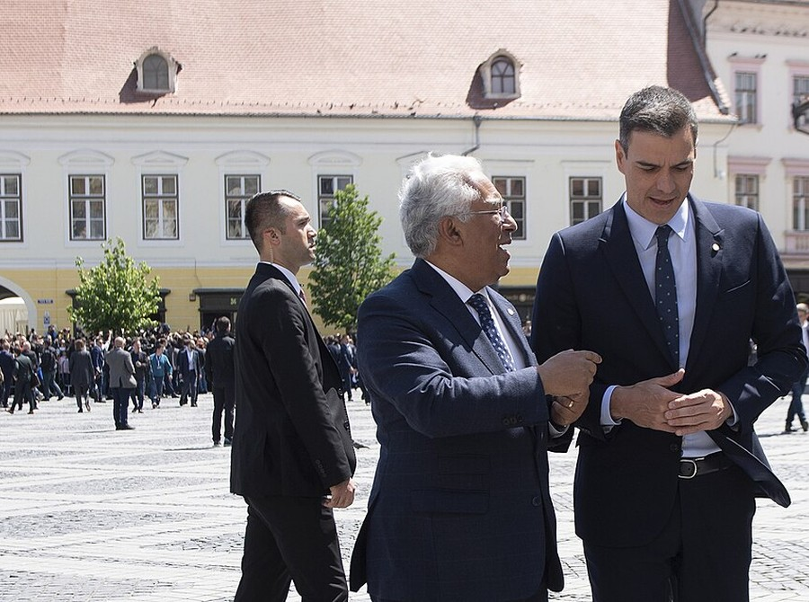

Zahlreiche EU-Diplomaten sind sauer auf Rumänien

Rumänien hat derzeit den Vorsitz unter den EU-Staaten inne. Unter EU-Diplomaten gibt es Kritik.
Rumänien hat derzeit den Vorsitz unter den Mitgliedstaaten der Europäischen Union inne. Unter EU-Diplomaten gibt es zunehmend Kritik an der Ausübung dieser Rolle.
Ein Treffen der Finanzminister in Brüssel sorgte für Unzufriedenheit, da einige Diplomaten der Ansicht sind, dass der Vorsitz für eigene politische Interessen genutzt werde. Die Kritik bezieht sich vor allem auf die Art der Gesprächsführung, die Festlegung von Prioritäten sowie den Umgang mit wichtigen politischen Themen.
Trotz der bestehenden Spannungen wird von dem vorsitzführenden Land erwartet, die Zusammenarbeit innerhalb der Europäischen Union zu koordinieren und gemeinsame Entscheidungen sachlich und ausgewogen zu begleiten. Der Vorsitz spielt eine wichtige Rolle bei der Förderung des Dialogs zwischen den Mitgliedstaaten sowie bei der Suche nach Kompromissen in schwierigen politischen und wirtschaftlichen Fragen. Beobachter betonen, dass Neutralität, Transparenz und die Orientierung am gemeinsamen europäischen Interesse entscheidend für eine erfolgreiche Amtsführung sind. Gleichzeitig wächst der Druck auf die Verantwortlichen, das Vertrauen der Partnerstaaten zu stärken und die Handlungsfähigkeit der Europäischen Union zu gewährleisten.